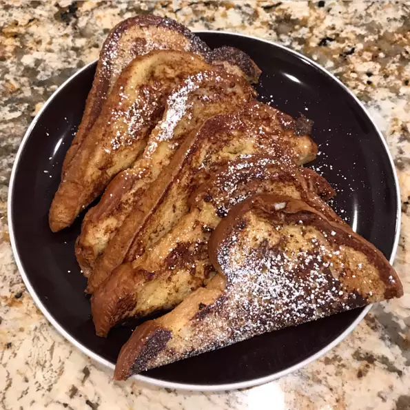

French Toast

Ingredients
- 2/3 cup milk
- 2 large eggs
- 1 teaspoon vanilla extract
- 1/4 teaspoon ground cinnamon
- salt to taste
- 6 thick slices of bread
- 1 tablespoon unsalted butter, or more as needed.
Directions
- Whisk milk, eggs, vanilla, cinnamon, and salt together is a small bowl
- Lightly butter a griddle and heat over medium-high height
- Dunk bread in the egg mixture, soaking both sides. Transfer to hot skillet and cook until
golden, 3 to 4 minutes per side. Serve hot.